| A comparison theorem, Sobolev imbeddings and Konrachov theorem for Riemannian manifolds |
| A comparison theorem, Sobolev imbeddings and Konrachov theorem for Riemannian manifolds |
Mar 22, 2018
In this part, we will first establish the Sobolev imbeddings theorem and the Kondrachov theorem for Riemannian manifolds from the Euclidean version of these theorems.
Theorem 1 (Sobolev Imbedding for 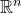 ). Given 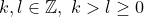 and 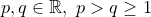. Then If 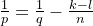 then is a continuous imbedding. If 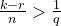 then If 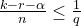 then
where 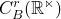 denotes the space of 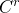 functions with bounded derivatives up to order
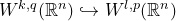
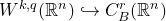
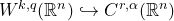
 , equipped with the norm 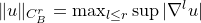, and 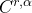 is the subspace of 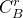 of functions whose
, equipped with the norm 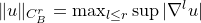, and 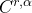 is the subspace of 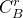 of functions whose  -derivative is 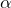-Holder, equipped with the norm 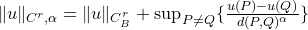.
-derivative is 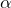-Holder, equipped with the norm 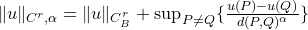.
Theorem 2 (Kondrachov for 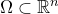 ). Let The imbedding 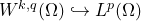 is compact. The imbedding 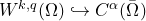 is compact if 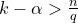 where 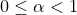. The imbeddings 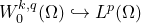 and 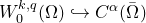 are compact, where 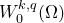 denotes the closure of 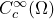 in 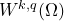, i.e. the subspace of functions whose trace vanishes on the boundary of .  be a bounded open subset with regular boundary and let 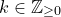 and
be a bounded open subset with regular boundary and let 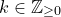 and  be such that 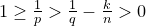 then
be such that 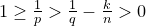 then
Theorem 1 will be generalised for complete manifolds with bounded curvature and injectivity radius, while Theorem 2 holds for compact Riemannian manifolds.
The generalisation will be done in 2 steps
Compare the volume form of the Riemannian metric  near a point and that of the Euclidean metric on the tangent space at that point. Theorem 4 gives an equivalent between the integral under and the integral under Euclidean metric via the exponential map.
near a point and that of the Euclidean metric on the tangent space at that point. Theorem 4 gives an equivalent between the integral under and the integral under Euclidean metric via the exponential map.
Reasonably use partition of unity to establish global results from local results (the Euclidean case). We will need a covering lemma (Calabi’s lemma), which essentially reduces to a combinatorial result (Vitali’s covering lemma).
Finally, we will apply imbedding theorems to solve the equation 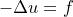 on a Riemannian manifold when  is square-integrable.
is square-integrable.
| A comparison theorem, Sobolev imbeddings and Konrachov theorem for Riemannian manifolds |
 on a Riemannian manifold.
on a Riemannian manifold.